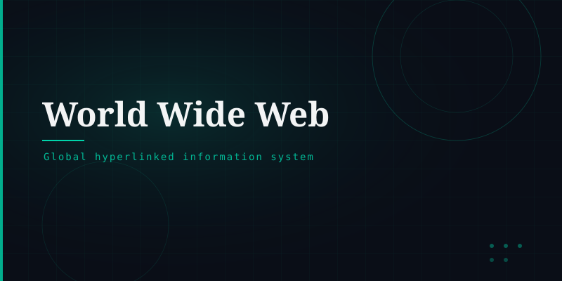

What is the World Wide Web?
The World Wide Web (WWW), commonly called "the Web," is an information system that enables documents and resources to be accessed over the Internet using a web browser. It was invented by British scientist Tim Berners-Lee in 1989 at CERN and launched publicly in 1991.
The Web is often confused with the Internet itself, but they are distinct: the Internet is the global network of computers, while the Web is one of many services that run on top of it — one that uses HTTP to exchange HTML-formatted documents.
How It Works
When you type a web address into your browser, a series of steps unfold: your browser resolves the domain via DNS, establishes a connection using TCP/IP, sends an HTTP request to the web server, and receives an HTML page in return. The browser then renders that page for you to read and interact with.
The Web is built on three core technologies: HTML (structure), CSS (presentation), and JavaScript (behaviour).
Key Milestones
Tim Berners-Lee proposes the Web at CERN.
First public website goes live.
Mosaic browser popularises the Web.
Over 5 billion users worldwide.
Significance
The Web democratised information publishing — anyone with a server could share content globally. It enabled e-commerce, social networking, cloud computing, and remote work, fundamentally transforming economies and cultures worldwide.